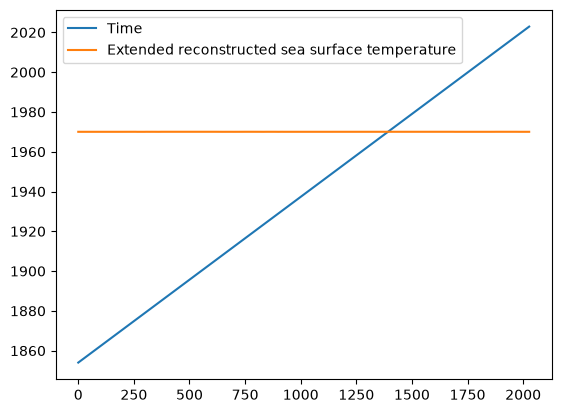
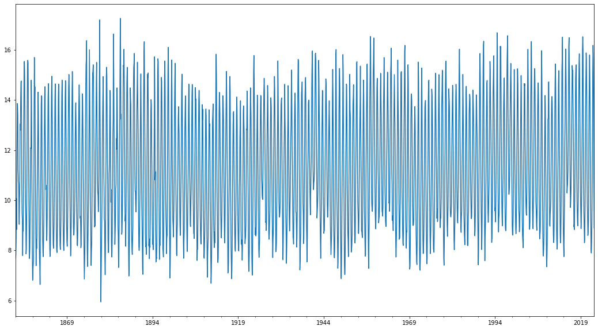
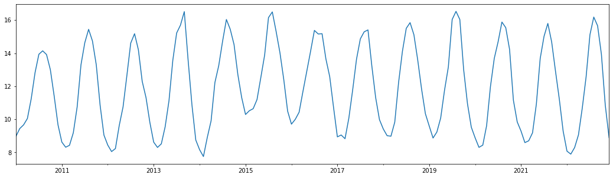
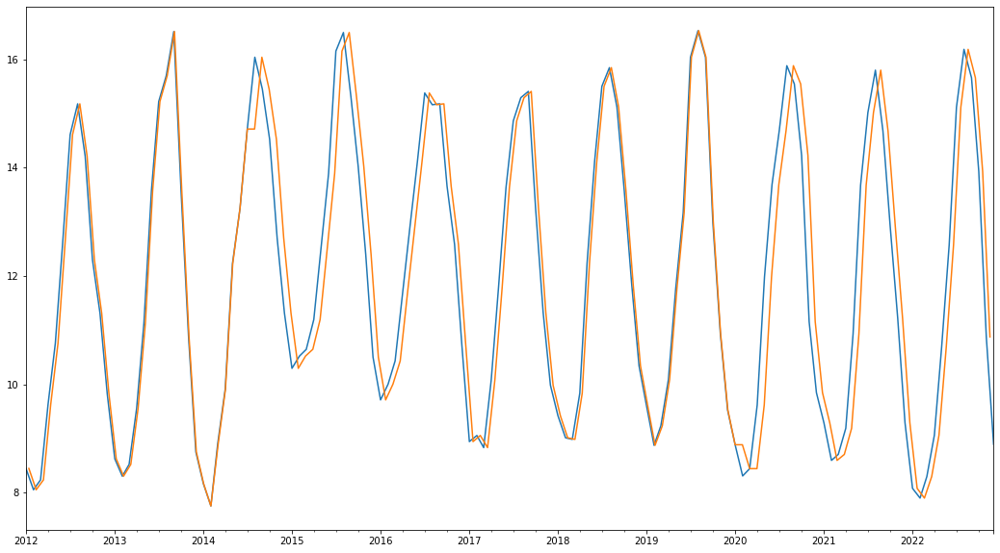
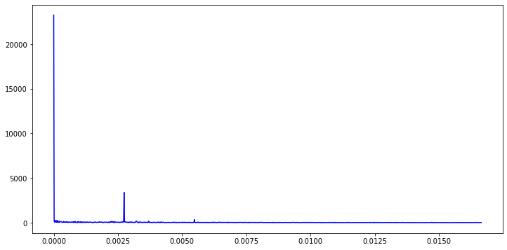
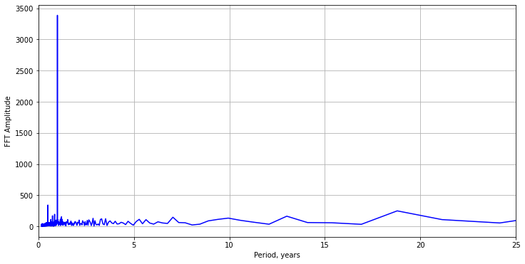
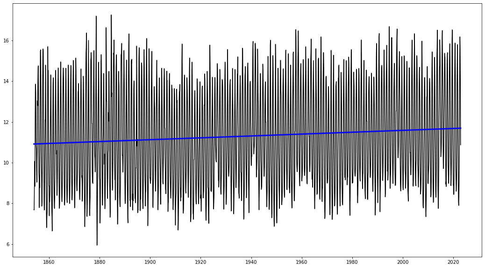

import pandas as pd
import datetime
from matplotlib import pyplot as plt
mybirthday = datetime.datetime(1983, 1, 15, 7, 15, 0, 2750)
print(mybirthday)
1983-01-15 07:15:00.002750
type(mybirthday)
datetime.datetime
mytime = datetime.datetime.now()
print(mytime)
2026-10-25 23:49:50.563041
myage = mytime-mybirthday
type(myage)
datetime.timedelta
myage.days/365
43.8054794520548
! head ../data/ERSST_nearForks.csv
Time,Extended reconstructed sea surface temperature
Jan 1854,7.682585
Feb 1854,7.798013
Mar 1854,8.468447
Apr 1854,10.0658
May 1854,8.840645
Jun 1854,11.99873
Jul 1854,13.86106
Aug 1854,13.79358
Sep 1854,13.40161
df = pd.read_csv('../data/ERSST_nearForks.csv', parse_dates=[0])
/var/folders/z0/wrqywbc546q6t6qyr2y02h6m0000gp/T/ipykernel_82799/372278077.py:1: UserWarning: Could not infer format, so each element will be parsed individually, falling back to `dateutil`. To ensure parsing is consistent and as-expected, please specify a format.
df = pd.read_csv('../data/ERSST_nearForks.csv', parse_dates=[0])
df.info()
<class 'pandas.DataFrame'>
RangeIndex: 2028 entries, 0 to 2027
Data columns (total 2 columns):
# Column Non-Null Count Dtype
--- ------ -------------- -----
0 Time 2028 non-null datetime64[us]
1 Extended reconstructed sea surface temperature 2028 non-null float64
dtypes: datetime64[us](1), float64(1)
memory usage: 31.8 KB
df.plot()
<Axes: >

Let’s pretend like we’re startig from scratch with an array of values:
temps = df.iloc[:,1].tolist()
type(temps)
list
dates = pd.date_range('1854-01', periods=df.shape[0], freq='MS')
dates
DatetimeIndex(['1854-01-01', '1854-02-01', '1854-03-01', '1854-04-01',
'1854-05-01', '1854-06-01', '1854-07-01', '1854-08-01',
'1854-09-01', '1854-10-01',
...
'2022-03-01', '2022-04-01', '2022-05-01', '2022-06-01',
'2022-07-01', '2022-08-01', '2022-09-01', '2022-10-01',
'2022-11-01', '2022-12-01'],
dtype='datetime64[us]', length=2028, freq='MS')
print(df.iloc[-1][0])
---------------------------------------------------------------------------
KeyError Traceback (most recent call last)
File /opt/homebrew/anaconda3/envs/geoscience/lib/python3.12/site-packages/pandas/core/indexes/base.py:3641, in Index.get_loc(self, key)
3640 try:
-> 3641 return self._engine.get_loc(casted_key)
3642 except KeyError as err:
File pandas/_libs/index.pyx:168, in pandas._libs.index.IndexEngine.get_loc()
--> 168 'Could not get source, probably due dynamically evaluated source code.'
File pandas/_libs/index.pyx:176, in pandas._libs.index.IndexEngine.get_loc()
--> 176 'Could not get source, probably due dynamically evaluated source code.'
File pandas/_libs/index.pyx:583, in pandas._libs.index.StringObjectEngine._check_type()
--> 583 'Could not get source, probably due dynamically evaluated source code.'
KeyError: 0
The above exception was the direct cause of the following exception:
KeyError Traceback (most recent call last)
Cell In[18], line 1
----> 1 print(df.iloc[-1][0])
File /opt/homebrew/anaconda3/envs/geoscience/lib/python3.12/site-packages/pandas/core/series.py:959, in Series.__getitem__(self, key)
954 key = unpack_1tuple(key)
956 elif key_is_scalar:
957 # Note: GH#50617 in 3.0 we changed int key to always be treated as
958 # a label, matching DataFrame behavior.
--> 959 return self._get_value(key)
961 # Convert generator to list before going through hashable part
962 # (We will iterate through the generator there to check for slices)
963 if is_iterator(key):
File /opt/homebrew/anaconda3/envs/geoscience/lib/python3.12/site-packages/pandas/core/series.py:1046, in Series._get_value(self, label, takeable)
1043 return self._values[label]
1045 # Similar to Index.get_value, but we do not fall back to positional
-> 1046 loc = self.index.get_loc(label)
1048 if is_integer(loc):
1049 return self._values[loc]
File /opt/homebrew/anaconda3/envs/geoscience/lib/python3.12/site-packages/pandas/core/indexes/base.py:3648, in Index.get_loc(self, key)
3643 if isinstance(casted_key, slice) or (
3644 isinstance(casted_key, abc.Iterable)
3645 and any(isinstance(x, slice) for x in casted_key)
3646 ):
3647 raise InvalidIndexError(key) from err
-> 3648 raise KeyError(key) from err
3649 except TypeError:
3650 # If we have a listlike key, _check_indexing_error will raise
3651 # InvalidIndexError. Otherwise we fall through and re-raise
3652 # the TypeError.
3653 self._check_indexing_error(key)
KeyError: 0
sst = pd.Series(temps, index=dates)
sst.loc['2022-01':'2022-12']
2022-01-01 8.078298
2022-02-01 7.898858
2022-03-01 8.296480
2022-04-01 9.060289
2022-05-01 10.690230
2022-06-01 12.571850
2022-07-01 15.114260
2022-08-01 16.183050
2022-09-01 15.658580
2022-10-01 13.926420
2022-11-01 10.873330
2022-12-01 8.892098
Freq: MS, dtype: float64
sst.plot(figsize=(18,10))
<AxesSubplot:>

sst.loc['2010':'2022'].plot(figsize=(18,5))
<AxesSubplot:>

Let’s resample our data to a uniform sample rate of 30 days:
sst_reg = sst.resample("30D").ffill()
sst.loc['2012':'2022'].plot(figsize=(18,10))
sst_reg.loc['2012':'2022'].plot()
<AxesSubplot:>

sst_reg.loc['2020':'2022']
2020-01-01 8.883529
2020-01-31 8.883529
2020-03-01 8.442430
2020-03-31 8.442430
2020-04-30 9.618597
2020-05-30 11.979400
2020-06-29 13.684600
2020-07-29 14.686490
2020-08-28 15.881450
2020-09-27 15.544550
2020-10-27 14.225620
2020-11-26 11.155250
2020-12-26 9.844648
2021-01-25 9.286531
2021-02-24 8.594229
2021-03-26 8.705052
2021-04-25 9.187806
2021-05-25 10.926470
2021-06-24 13.677040
2021-07-24 15.014510
2021-08-23 15.799060
2021-09-22 14.677730
2021-10-22 12.911790
2021-11-21 11.216630
2021-12-21 9.287827
2022-01-20 8.078298
2022-02-19 7.898858
2022-03-21 8.296480
2022-04-20 9.060289
2022-05-20 10.690230
2022-06-19 12.571850
2022-07-19 15.114260
2022-08-18 16.183050
2022-09-17 15.658580
2022-10-17 13.926420
2022-11-16 10.873330
Freq: 30D, dtype: float64
import scipy
import numpy as np
Here we’re taking the Fourier Transform of our SST
freq_spec = np.fft.fft(sst_reg.values)
# First lets grab the length of our record in samples
N = sst_reg.shape[0]
print(N)
2057
#period in between samples of our discretly sampled data
t = 30 #day
#not sample rate:
sr=1/t
#get the total duration of our record:
T = N*t
print(T/365)
169.06849315068493
freq = np.fft.fftfreq(N,t)
freq.shape
(2057,)
print(max(freq))
0.016658564252147137
print(sr/2)
0.016666666666666666
Let’s plot it up:
#grab positive side of the spectrum
n_oneside = N//2
f_oneside = freq[:n_oneside]
f_spec_oneside = np.abs(freq_spec[:n_oneside])
plt.figure(figsize = (12,6))
plt.plot(f_oneside, f_spec_oneside, 'b')
[<matplotlib.lines.Line2D at 0x115d13df0>]

plt.figure(figsize = (12,6))
plt.plot(1/f_oneside/365, f_spec_oneside, 'b')
plt.xlabel('Period, years')
plt.ylabel('FFT Amplitude')
plt.grid()
plt.xlim((0, 25))
/var/folders/dr/7qx5y5kj46z_9gs_10d9mxkh0000gn/T/ipykernel_27957/3166245131.py:2: RuntimeWarning: divide by zero encountered in true_divide
plt.plot(1/f_oneside/365, f_spec_oneside, 'b')
(0.0, 25.0)

from sklearn import datasets, linear_model
from sklearn.metrics import mean_squared_error, r2_score
# converting my timeseries back to ... a number
# this will be days relative to the start of my record
dt = (sst_reg.index - sst_reg.index[0]).days.to_numpy()
dt.shape
(2057,)
X = dt.reshape(-1,1)
X.shape
(2057, 1)
y = sst_reg.to_numpy()
Now for the model fit - this is how sklearn does it - We define a model!
#initialize my linear model
regr = linear_model.LinearRegression()
#fit the model based on our data and then make a predicion using our model
regr.fit(X,y)
y_pred = regr.predict(X)
plt.figure(figsize=(18,10))
plt.plot(sst_reg.index, y, color="black")
plt.plot(sst_reg.index, y_pred, color="blue", linewidth=3)
[<matplotlib.lines.Line2D at 0x1457ac070>]

regr.coef_
array([1.25752462e-05])
regr.intercept_
10.918364670257713
r2_score(y,y_pred)
0.00803451260349397
sst_final= pd.DataFrame({ 'sst': sst_reg})
sst_final
sst_reg.shape
(2058,)
plt.figure()
ax1 = sst_final.plot(figsize=(15, 9), linewidth=1, fontsize=16)
---------------------------------------------------------------------------
TypeError Traceback (most recent call last)
Input In [77], in <cell line: 2>()
1 plt.figure()
----> 2 ax1 = sst_final.plot(figsize=(15, 9), linewidth=1, fontsize=16)
File ~/anaconda3/envs/MACS497/lib/python3.10/site-packages/pandas/plotting/_core.py:972, in PlotAccessor.__call__(self, *args, **kwargs)
969 label_name = label_kw or data.columns
970 data.columns = label_name
--> 972 return plot_backend.plot(data, kind=kind, **kwargs)
File ~/anaconda3/envs/MACS497/lib/python3.10/site-packages/pandas/plotting/_matplotlib/__init__.py:71, in plot(data, kind, **kwargs)
69 kwargs["ax"] = getattr(ax, "left_ax", ax)
70 plot_obj = PLOT_CLASSES[kind](data, **kwargs)
---> 71 plot_obj.generate()
72 plot_obj.draw()
73 return plot_obj.result
File ~/anaconda3/envs/MACS497/lib/python3.10/site-packages/pandas/plotting/_matplotlib/core.py:327, in MPLPlot.generate(self)
325 def generate(self):
326 self._args_adjust()
--> 327 self._compute_plot_data()
328 self._setup_subplots()
329 self._make_plot()
File ~/anaconda3/envs/MACS497/lib/python3.10/site-packages/pandas/plotting/_matplotlib/core.py:506, in MPLPlot._compute_plot_data(self)
504 # no non-numeric frames or series allowed
505 if is_empty:
--> 506 raise TypeError("no numeric data to plot")
508 self.data = numeric_data.apply(self._convert_to_ndarray)
TypeError: no numeric data to plot
<Figure size 432x288 with 0 Axes>